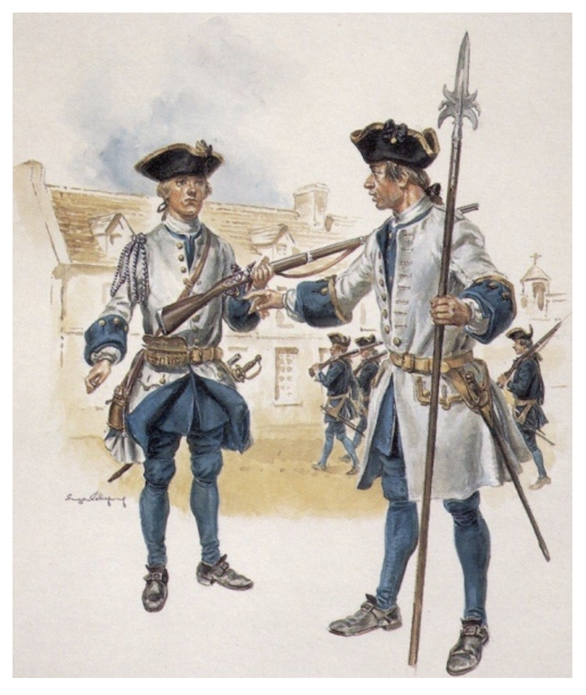

Question : En 7ième année, mon prof d'histoire m'a dit que la désignation Potvin indiquait seulement que mon ancêtre venait de la région de Poitou, France et que pas tout les Potvin était de la même famille. Je me suis toujours demandé comment il le savait et pourquoi cela m'a semblé important. Voici un petit apperçu..
Emard et le nom de guerre : Potvin
"En 1716, les règlements militaires français exige la présence d'un "nom de guerre" pour tous les simples soldats[...] les officiers, les cadets, les volontaires et les gentilhommes n'en ont pas." C'est pour s'en servir comme identificateur unique dans une compagnie de soldats.
Donc le "DIT" est commun en Nouvelle-France et ces soldats sont reconnus par leurs noms, prénoms et noms de guerre. Contrairement aux habitudes française, le nom de guerre remplace le patronyme du soldat et de sa famille dans le quotidien.
Le "DIT" est aussi une désignation légale en droit civil - ce qui fait que les gens peuvent l'interchanger au besoin et au choix des gens.
Notre soldat de les Troupes de la Marine : Compagnies franches de la Marine
Dr. Luc Lépine, historien, écrit : "En 1685,...les autorités françaises décident donc d'envoyer ici en permanence 28 compagnies (env. 50 soldats+120 officiers) d'un détachement des Troupes de la Marine, [aka Compagnies franches de la Marine]....Comme il n'y avait pas de baraques pour les militaires avant 1750, les soldats étaient logés chez les habitants qui devaient pour une certaine somme s'occuper [de] leurs invités. Les long hivers canadiens forcent les soldats à passer de longues heures près du feu à causer avec les jolies canadiennes. Aussi, n'est-il pas surprenant de voir le nombre élevé de mariages de soldats des Compagnies franches de la Marine avec des filles d'habitants canadiens. De 1685 à 1754, environ 21,000 militaires francais sont venus en Nouvelle-France. Si on évalue à 2500, le nombre de nouveaux patronymes dans la colonie, un soldat sur 8 aurait laissé un patronyme en Nouvelle-France."[Lépine]
- Pierre Aymard dit Poitevin (v1668-1732)
- Origine : Melle (Deux-Sèvres), Poitou, FRA
- Première mention au pays : 1698
- Occupation : Caporal, un soldat des unités d'infanterie des troupes de la Marine
- Mariage: Longueuil, 1702fév02
- Epouse : Jeanne-Marguerite Bloys / Delois, veuve (2e génération, née Montréal)
- Vivant : Longueuil
- INFO : Pierre+Jeanne-Marguerite
- INFO [5]: 1698 - Habitants de la Nouvelle-France en 1698 (*inclus environs)) : Quebec 1,988 ; Montreal 1,185; Trois-Riviere 358.
- INFO [6]: Dans la milice de la Nouvelle-France, un caporal est élue par ses camarades.
- (1) https://www.acadian.org/genealogy/families/1055-2/ - "Nicknames("Dit"Names), Stephen White. Accessed 2018Feb20.
- (2) http://www.genealogy.com/forum/surnames/topics/quebec/552/ - Luc Lépine, historien Ph.D.
- (3) http://www.fichierorigine.com/recherche?numero=270040
- (4) http://marigot.ca/Repertoire2/html/fiches/E_2241.html
- (5) http://www.paricilademocratie.com/approfondir/territoire-et-constitutions/112-occupation-du-territoire-lors-du-regime-francais
- (6) https://hssh.journals.yorku.ca/index.php/hssh/article/viewFile/38977/35365 - Fernand Ouellet, "Officiers de milice et structure sociale au Québec (1660-1815)."

Longueuil St-Constant etc - source : Google maps
Soldats compagnies Franche - source : BAC-LAC
